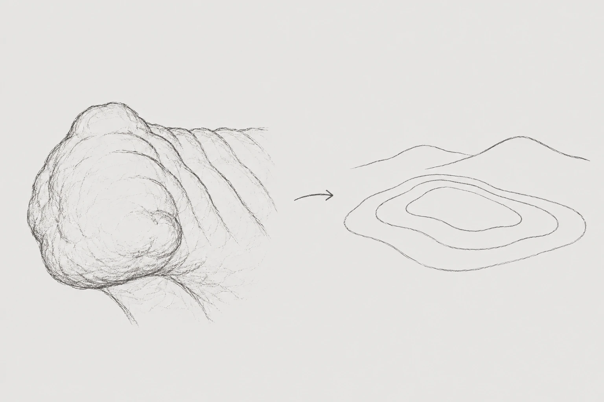

새겨진 선 → 길
목 뒤에서 몸통으로 이어지는 선은 나란히 뻗다가 굽어지는 길을 닮았습니다.
석사자는 어디에 놓였고, 주변에는 어떤 길이 있었을까요?
01 · OBSERVATION & RESEARCH
두 석사자의 형태와 문양을 가까이 살폈습니다. 문헌과 다른 석사자를 비교하고, 객사터와 옛 지도에서 공주목과의 연결을 찾아갔습니다.
3D 스캔에서 갈기·수염·무늬·이목구비·눈매를 같은 방향으로 비교했습니다. 새겨진 선의 흐름과 두 점의 크기 차이를 기록하고, 그 형태에서 길과 지형을 떠올렸습니다.
목 뒤에서 몸통으로 이어지는 선은 나란히 뻗다가 굽어지는 길을 닮았습니다.
석사자는 어디에 놓였고, 주변에는 어떤 길이 있었을까요?

머리와 갈기의 겹겹이 굽은 선에서는 낮은 언덕과 등고선이 떠올랐습니다.
옛 지도에는 공주의 산과 강, 마을이 어떻게 그려져 있을까요?
3D 스캔을 바탕으로 그린 스케치입니다. 길과 구릉은 문양에서 떠올린 팀의 시각적 해석입니다.
팀이 비교한 길이와 문양의 수를 Index에 함께 담았습니다. 아래 값은 문헌의 유물 제원과 구분한 팀의 관찰 기록입니다.
| 항목 | 수사자 | 암사자 |
|---|---|---|
| 몸 길이 | 104.6 cm | 120.1 cm |
| 얼굴 길이 | 36.8 cm | 34.1 cm |
| 얼굴 너비 | 37.6 cm | 34.5 cm |
| 정수리 갈기 수 | 11개 | 8개 |
| 한쪽 수염 수 | 4개 | 8개 |
| 수염 평균 길이 | 9.5 cm | 6.5 cm |
| 등 줄기 수 | 18개 | 16개 |
| 코 길이 | 10.2 cm | 15.4 cm |
| 입 크기 | 15.9 cm | 21.9 cm |
| 이빨 크기 | 1.8 cm | 1.2 cm |
| 이빨 수 | 7개 | 9개 |
팀 제공 비교 기록 · 2026.10.11 · Index 표시값 기준. ‘수사자·암사자’는 Index의 구분명으로, 제작 당시의 성별 표현이나 한 쌍 여부가 확정된 것은 아닙니다.[2]
다섯 관찰 지점 자세히 보기 →충남발전연구원의 2008년 조사 보고서는 봉황동 석사자를 고려시대 미지정 전통자원으로 분류합니다. 『디지털공주문화대전』도 고려시대 작품으로 추정하며, 공주대학교 박물관 소장 화강석 사자상 두 점을 소개합니다.[1][2]
문화대전은 문이나 계단 앞에 놓인 건축물의 부속 장식으로 보고, 사악한 기운을 막는 의미를 설명합니다. 다만 정확한 제작 연도와 최초 설치 장소는 밝히지 않습니다. ‘암수를 상징하는 듯하다’는 설명 역시 추정으로 읽었습니다.[2]
불교 미술에서 사자는 수호의 의미를 지니며 석탑, 승탑, 불상 대좌 등에 나타납니다. 사자의 형상이 무엇을 지키고 무엇을 받치는지 살펴보는 것이 쓰임을 이해하는 단서였습니다.[3]
이 맥락을 바탕으로 독립된 수호상이었을 가능성과 다른 석조물의 일부였을 가능성을 함께 검토했습니다. 봉황동 석사자의 기능을 판단하려면 형태의 유사성에 더해 받침면이나 다른 부재와 맞물린 흔적, 원래 배치에 관한 자료가 필요합니다.
조사에서 살핀 사례를 자세, 조각 표현, 구조물과의 관계로 나누어 비교했습니다. 각 자료가 설명하는 특징과 봉황동 석사자에 던진 질문을 함께 정리했습니다.
비교한 점봉황동의 낮은 몸체와 다리 표현을 함께 살피고, 등과 받침면에 구조물을 지지한 흔적이 있는지 질문했습니다.
비교한 점두 사자가 상부를 함께 받치는 구성이 분명한 사례입니다. 봉황동의 두 점에도 한 쌍의 배치나 같은 기능을 보여주는 근거가 있는지 살폈습니다.
비교한 점사자의 자세와 배치가 건축 구조에 맞춰지는 사례로 보았습니다. 봉황동의 몸체 비례와 발의 표현을 비교하되, 닮은 형태만으로 같은 쓰임을 단정하지 않았습니다.
비교한 점연대가 명확한 사례와 봉황동의 조형을 대조하는 기준으로 검토했습니다. 양식 비교가 봉황동의 정확한 제작 연도를 확정해 주는 것은 아닙니다.
비교한 점성별을 읽는 구체적인 조각 표현과 보존 상태를 비교했습니다. 봉황동 두 점의 크기와 입 모양 차이만으로 암수 관계를 확정하기는 어렵다고 보았습니다.
『디지털공주문화대전』은 봉황동 석사자가 공주 객사터에 있었던 것으로 설명합니다. 고려시대 제작이라는 추정과 객사터에 전해졌다는 이력은 구분해서 살펴야 합니다. 객사터와의 관련만으로 처음부터 객사를 위해 제작되었다고 단정할 수는 없습니다.[2]
객사는 국왕을 상징하는 전패 등을 모시고 사신과 관료가 머물던 곳입니다. 행정 업무를 보던 관아와 함께 이야기의 주요 배경이 되었습니다.[6]
공주시 지명 자료는 현재 중동초등학교 자리를 옛 공주객사터로 소개합니다. 이 기록을 통해 석사자를 유물 한 점에서 공주목의 의례와 생활 공간으로 연결해 볼 수 있었습니다.[7]
1872년 「공주목지도」에는 남쪽이 위에 놓이고, 길은 노란색 두 줄로 표시되어 있습니다. 산과 강 사이에 자리한 관아와 마을의 배치가 보입니다.[8]
이 배치를 참고해 이야기 속 공주목의 풍경을 만들었습니다. 지도에 담긴 산과 물길, 마을의 관계를 활용하되 석사자의 원래 자리와 이동 경로를 복원한 것으로 제시하지 않았습니다.

문양에서는 길과 구릉을 떠올렸고, 문헌에서는 객사터라는 장소의 단서를 찾았습니다. 두 발견을 이어 석사자와 공주목을 주제로 삼았습니다.